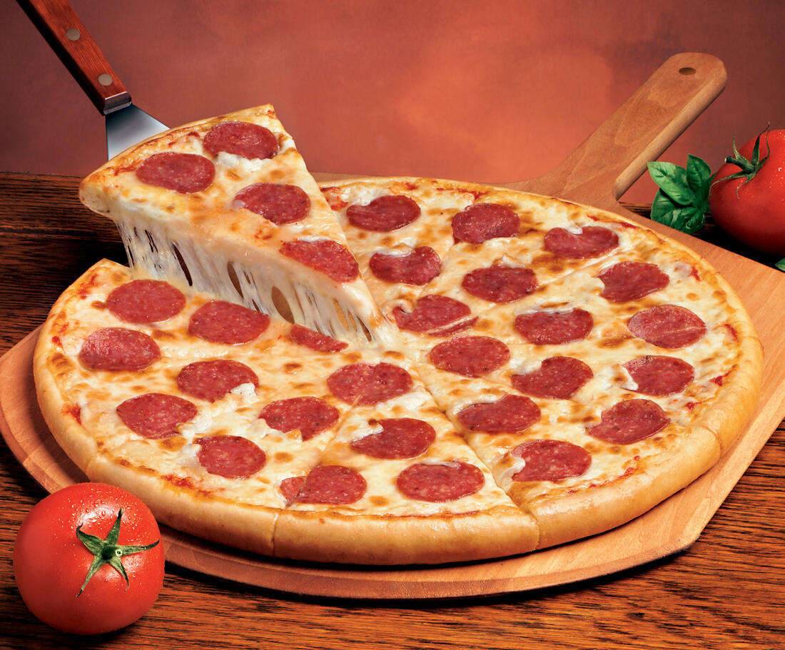

Пицца пепперони — это классическое блюдо итало-американской кухни, которое покорило мир своим ярким и узнаваемым вкусом. В основе этой пиццы лежит тонкое, хрустящее по краям и мягкое внутри дрожжевое тесто, щедро смазанное ароматным томатным соусом с добавлением базилика, орегано и чеснока. Поверх соуса равномерно распределен тягучий расплавленный сыр моцарелла, который придает блюду нежную сливочную текстуру и смягчает остроту остальных ингредиентов.
Главным акцентом выступают тонкие кружочки пикантной сырокопченой колбасы пепперони, которые при запекании слегка подрумяниваются, заворачиваются по краям и выделяют пряное ароматное масло. Сочетание хрустящей корочки, сочной томатной основы, тянущегося сыра и острой колбасы с легкими нотками паприки и перца делает эту пиццу невероятно аппетитной, сытной и универсальной для любого случая.